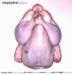

| Artist: | Clepsydra |
| Title: | Alone |
| Label: | self produced CCD 4111/2 |
| Length(s): | 62 minutes |
| Year(s) of release: | 2002 |
| Month of review: | [04/2002] |
| 1) | Tuesday Night Part 1 | 2.22 |
| 2) | Tuesday Night Part 2 | 5.34 |
| 3) | Tuesday Night Part 3 | 5.18 |
| 4) | Travel Of Dream Part 1 | 2.42 |
| 5) | Travel Of Dream Part 2 | 6.25 |
| 6) | Travel Of Dream Part 3 | 1.45 |
| 7) | The Return | 7.10 |
| 8) | The Father | 7.30 |
| 9) | Alone Part 1 | 0.41 |
| 10) | Alone Part 2 | 5.19 |
| 11) | The Nest | 6.58 |
| 12) | God Or Beggar | 5.44 |
| 13) | End Of Tuesday | 5.03 |
The three versions (which differ only in their artwork) of this album are all housed in extremely ugly artwork. I guess the artwork fits the title of the album well in a way, but I feel sure it will affect sales of the album, especially for people who are looking to try something new and will be put off by it. In that sense, the choice of the band is courageous.
Travel Of Dream is the next song. After a typical neo-prog opening, the song is enlivened by a wonderful majestic chorus full in sound and with melodies to sweep you off your feet. The following guitar solo is in the style of Pendragon, but not nearly as long. We have already arrived at the second part, which signifies a break in the music. The music is now more orchestral and fuller and the music starts to slowly build up. A Mark Kelly like keyboard solo rings out, but one in which a certain sadness can be felt. The third part of the song features again many keyboards, much more than I am than used from bands such as these. The modern sounding keyboards (laced with warm layers of keyboards) are accompanied by acoustic guitars this time.
We run right into The Return, the way this happens more and more makes me believe that this in fact a concept album of some kind. However, there is not really an obvious story being told. For that the lyrics are too vague, too personal and has too little of a plot, it seems the album is much like a spiritual journey of some kind (the lyrics are not always grammatical though). The acousticness of the music (with the ever present keyboards though) continues, with a vocal line standing out from the rest. Although the music is largely quite dreamy, the melodies used throughout do stick in my head and these parts are certainly not to be considered filler. The music does stay calm throughout with piano and something sounding cello like.
The Father is a stately song with keyboards full of foreboding, echoey acoustic guitar and a dark bass presence (think of the poem part on Misplaced Childhood for instance). This impression only lasts while Maggini is not singing of course. On this track the rhythm guitars figure quite prominently, but there is some nice work on the solo keyboard.
Alone part 2 opens with a short part, a part which sounds a bit familiar already with atsmopheric electric guitars and a percussive feel. The Nest is for a large part rather moody with some Fruitcake like somberings on the keyboards, but also long strong chords on the guitar in Pendragon style.
God Or Beggar seems to want to signify a turn in the music. The music is a bit more spacey here, the final part has moody repetitive acoustic guitars. The album closes with the End Of Tuesday, possibly a fourth part to the first song on the album. The song has a bit fuller sound than the previous tracks with a somewhat higher pace, preparing for the climax.